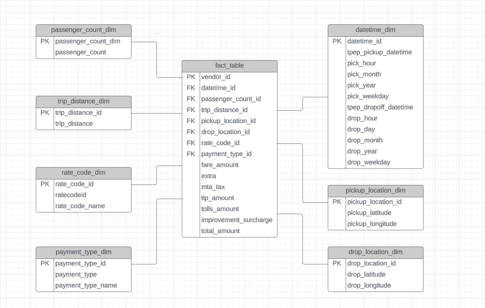
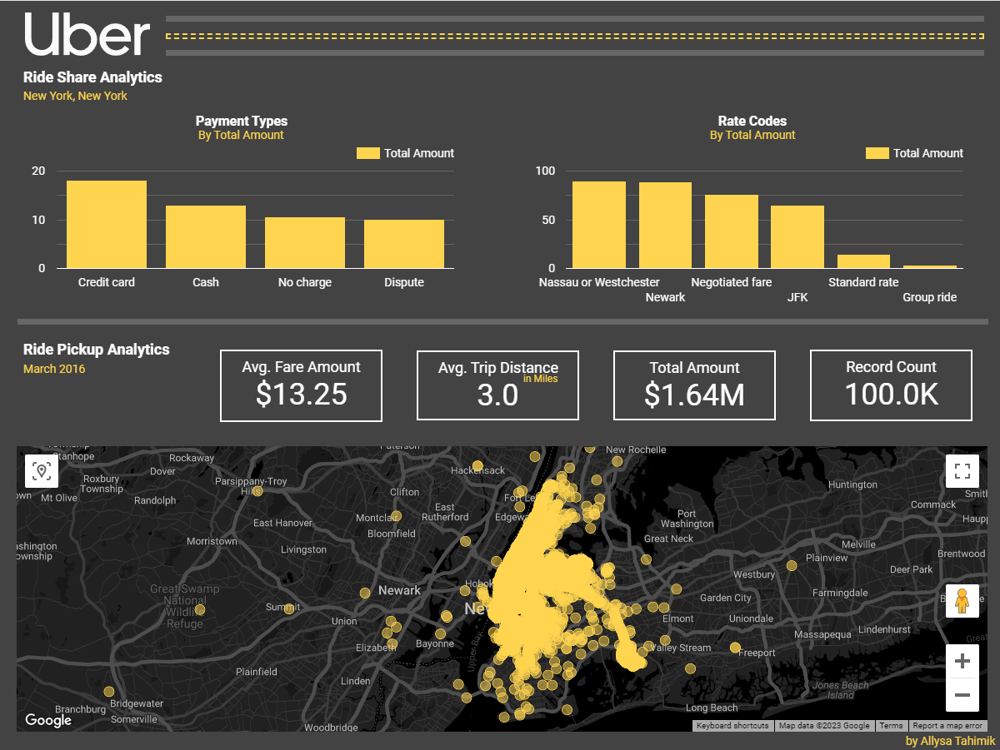

Back to Projects

Uber Data Pipeline
A data engineering pipeline for Uber trip data: cloud storage, a managed ETL tool, a data warehouse, and a published dashboard.
A data engineering pipeline for Uber trip data: cloud storage, a managed ETL tool, a data warehouse, and a published dashboard.
Raw Uber trip data arrives in Google Cloud Storage. A Compute Engine instance runs the transformation logic in Python, through Jupyter. Mage moves the result into BigQuery. Looker Studio reads BigQuery for the dashboard.
The dashboard needs the fact and dimension data in one flat table that BigQuery can query quickly. The entity-relationship diagram is the plan for that join.

Transform, BigQuery SQL
CREATE OR REPLACE TABLE uber_analytics AS
SELECT
f.VendorID, d.tpep_pickup_datetime, d.tpep_dropoff_datetime,
p.passenger_count, t.trip_distance, r.rate_code_name,
pick.pickup_latitude, pick.pickup_longitude,
dropoff.dropoff_latitude, dropoff.dropoff_longitude,
pay.payment_type_name, f.fare_amount, f.tip_amount, f.total_amount
FROM fact_table f
JOIN datetime_dim d ON f.datetime_id = d.datetime_id
JOIN passenger_count_dim p ON f.passenger_count_id = p.passenger_count_id
JOIN trip_distance_dim t ON f.trip_distance_id = t.trip_distance_id;One wide table uses more storage and gives faster queries. That is correct for a dashboard with many reads and few rebuilds. The cost is a full rebuild of the table after any change to a dimension. A production system with frequent dimension changes needs a different design.
The pipeline is only useful if it ends in a report that a non-technical stakeholder can read without a SQL client.

Looker Studio reads the BigQuery table directly, with no export step. The dashboard therefore updates each time the pipeline runs, and nobody must refresh it by hand.
The pipeline delivers one result that matters: the dashboard reads BigQuery directly, so it updates with every run and nobody refreshes it by hand. That removes the manual export step where most reports go stale.
The design has one limit. The wide table must be rebuilt in full after any change to a dimension. That is acceptable for trip data that arrives in batches. A source with frequent dimension changes needs incremental loads instead.
This page is a study reference and not original work. I followed an existing Google Cloud and Mage pipeline to learn the architecture. I will then rebuild it with a different data set, closer to the logistics data I work with.